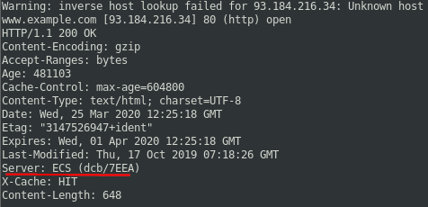
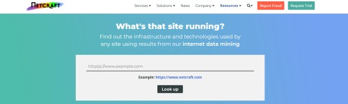
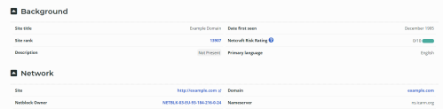
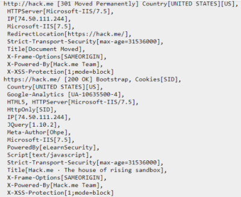

Server Version: manual fingerprinting
We have to connect(via HTTP, HTTP/2, HTTPS, FTP, FTPS, SMTP and NNTP) to a listening Web Server's daemon and then read the banner that it send back
Manually
•
HTTP server(also here) we can use netcat to connect with a HTTP Web Server
printf "HEAD / HTTP/1.1\r\nHost:www.example.com\r\n\r\n" | nc -v www.example.com 80 #80 is the default HTTP port
notice that after the request we need two times new line (
\r\n\r\n)
 ECS is the Amazon Web Service for Docker applications
•
HTTPS server(also
here)
printf "GET / HTTP/1.1\r\nHost:hack.me\r\n\r\n" | openssl s_client -connect hack.me:443 -ign_eof
Tools
•
Netcraft:
https://sitereport.netcraft.com/  • Whatweb:
https://www.whatweb.net/ Github →
https://github.com/urbanadventurer/WhatWeb It is also preinstalled on Kali Linux
below the output of whatweb.net
